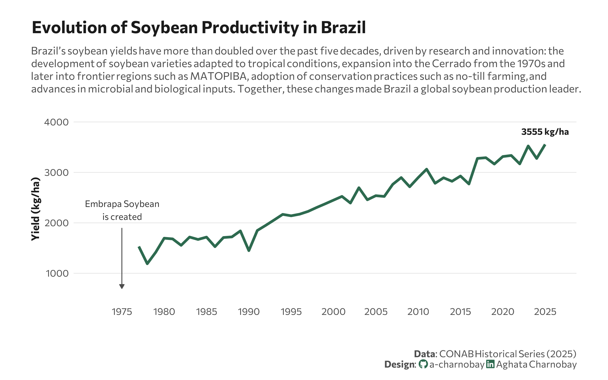

library(reticulate)
use_virtualenv("r-reticulate", required = TRUE)
#py_config()19.Evolution
Timeseries
Lineplot

1 Setup
1.1 Create R and Python connection
1.2 Load R packages
library(tidytext)
library(ggtext)
library(showtext)
library(stringr)
library(tidyverse)
library(here)1.3 Load data
import agrobr
import asyncio
import pandas as pd
import numpy as np
from agrobr.sync import conab
soy_df = asyncio.run(agrobr.datasets.serie_historica_safra("soja"))print(soy_df.head())1.4 Set theme
# Font setup
font_add_google("Commissioner")
showtext_auto()
showtext_opts(dpi = 300)
font_main <- "Commissioner"
# Font Awesome for caption
font_add(family = "fa-brands", regular = here("fonts", "Font Awesome 7 Brands-Regular-400.otf"))
# Colors
title_col <- "grey10"
text_col <- "grey30"
bg_col <- "#F2F4F8"
col_line <- "#2D6A4F"2 Prepare data for plotting
soy_df <- py$soy_df
yield <- soy_df |>
mutate(produto = "Soybean") |>
# Split "1976/77" into "1976" and "77"
separate(safra, into = c("year_start", "year_end"), sep = "/", remove = FALSE) |>
# Logic: If year_end is 00-25, it's 2000s. If it's 76-99, it's 1900s.
mutate(year = as.numeric(year_end),
year = ifelse(year <= 25, 2000 + year, 1900 + year)) |>
group_by(produto, year) |>
summarize(mean_yield = mean(produtividade_kg_ha, na.rm = TRUE)) |>
ungroup()3. Plot
p <- ggplot(yield, aes(x = year, y = mean_yield, group = 1)) +
# Annotation
annotate("text",
x = 1975,
y = 2250,
label = "Embrapa Soybean\nis created",
family = font_main,
size = 3,
hjust = 0.5,
fontface = "italic",
color = "grey20") +
annotate("segment",
x = 1975, xend = 1975,
y = 1900, yend = 700,
color = "grey30",
size = 0.4,
arrow = arrow(length = unit(0.15, "cm"), type = "closed")) +
geom_line(color = col_line, size = 1.2) +
geom_text(data = yield %>% slice_tail(n = 1),
aes(label = paste0(round(mean_yield, 0), " kg/ha")),
vjust = -1.5, family = font_main, fontface = "bold", color = title_col, size = 3) +
scale_y_continuous(expand = expansion(mult = c(0.1, 0.2))) +
scale_x_continuous(breaks = seq(1975, 2025, by = 5), limits = c(1972, 2026)) +
labs(
title = "Evolution of Soybean Productivity in Brazil",
subtitle = "Brazil’s soybean yields have more than doubled over the past five decades, driven by research and innovation: the<br>development of soybean varieties adapted to tropical conditions, expansion into the Cerrado from the 1970s and<br>later into frontier regions such as MATOPIBA, adoption of conservation practices such as no-till farming, and<br>advances in microbial and biological inputs. Together, these changes made Brazil a global soybean production leader.",
x = "",
y = "Yield (kg/ha)",
caption = paste0(
"**Data**: CONAB Historical Series (2025)",
"<br>**Design**: <span style='font-family:fa-brands; color:#2D6A4F;'></span> a-charnobay ",
"<span style='font-family:fa-brands; color:#2D6A4F;'></span> Aghata Charnobay"
)
) +
# Styling
theme_minimal(base_family = font_main) +
theme(
plot.title.position = "plot",
plot.title = element_text(face = "bold", size = 16, color = title_col, margin = margin(b = 10)),
plot.subtitle = element_markdown(size = 10, color = text_col, margin = margin(b = 20), lineheight = 1.2),
plot.caption = element_markdown(size = 9, color = text_col, margin = margin(t = 20),lineheight = 1.1 ),
panel.grid.minor = element_blank(),
panel.grid.major.x = element_blank(),
panel.grid.major.y = element_line(color = "grey90", size = 0.3),
axis.text = element_text(size = 9, color = text_col),
axis.title = element_text(size = 10, face = "bold", color = title_col),
plot.margin = margin(20, 30, 10, 30),
plot.background = element_rect(fill = "white", color = NA)
)